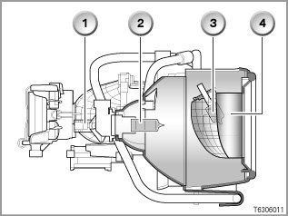
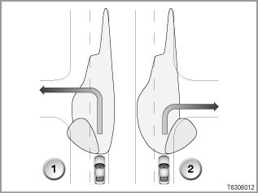
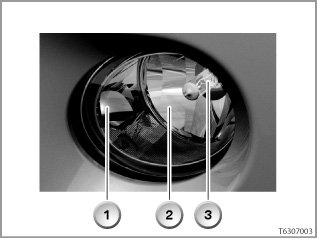
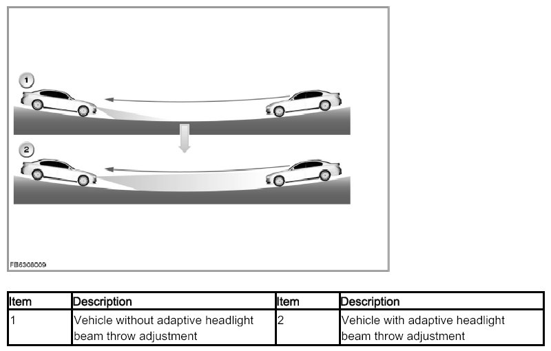
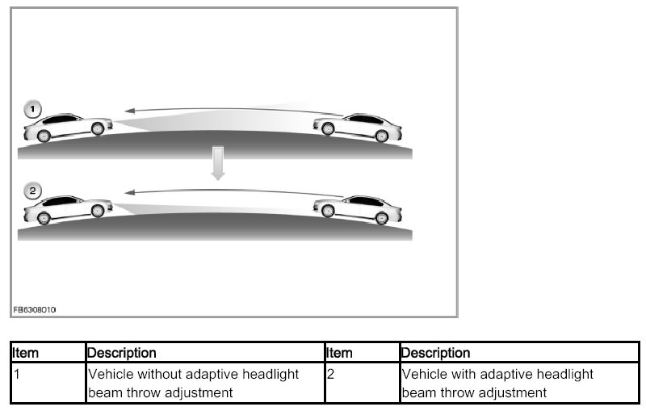
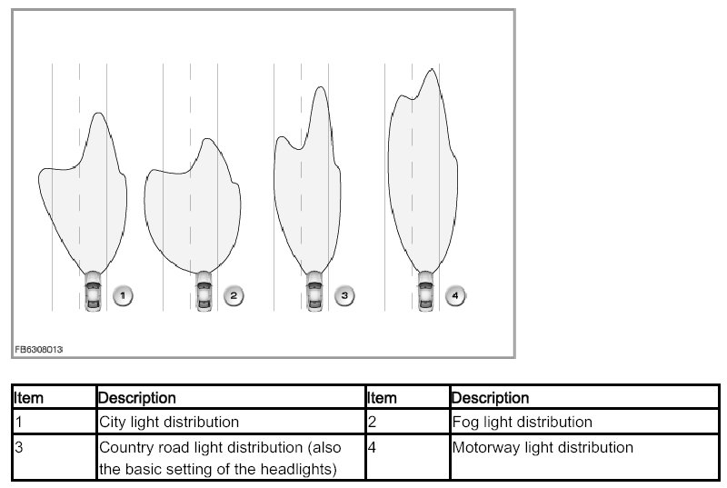

Part 3
63 02 03 007 Adaptive Headlight
Turning lights
The cornering light is linked to the adaptive headlight (optional equipment 524).
The footwell module (FRM) uses the following signals to adjust the turning lights:
- Steering angle
- Yaw rate
- Status, reverse gear
> E81, E82, E88, E89, E92, E93 with the series launch and E87 from 03/2007
Instead of the high beam headlight (H7), the headlight with turning light has a fixed additional reflector with an H3 bulb. The special styling of the headlight lens prevents dazzle to the front.

The graphic shows the main headlight with turning light on the E81, E82, E87, E88, E89, E92, E93
1) Bi-xenon lamp
2) H8 bulb for side lights and daytime driving lights
3) H3 bulb for turning lights
4) Reflector for cornering light

The graphic shows the headlight with turning light on the E81, E82, E87, E88, E89, E90, E91, E92, E93
1) Turning left
2) Turning right
The following prerequisites must be satisfied for the turning lights to be switched on:
- Terminal 15 ON
- Light switch in position "A" ("A" stands for automatic driving lights control)
- Rain/light sensor identifies twilight or darkness (threshold value exceeded)
At driving speeds greater than 70 kph, the cornering light is no longer switched on.
> European version: For legal reasons, the turning lights on the European version can only be activated via the turn indicator at speeds up to 40 km/h.
When reversing, the footwell module (FRM) activates the turning lights as follows in the speed range 0 km/h to 35 km/h:
- US version, both sides
- Other countries, only outer side of bend
When the turn indicator is switched on: If the vehicle is stationary, the turning lights will automatically be deactivated after approx. 4 seconds, e.g. when waiting at traffic lights. However, the turning lights can be activated again with the turn signal/high beam switch (up to 3 times) until the reflector has reached a certain temperature. A temperature model protects the headlights against excessive thermal load.
The switching-off conditions for the turning light depend on the country concerned.
NOTE: Temperature monitoring by temperature model.
A temperature model in the footwell module calculates the temperature of the reflector. The temperature at the reflector must not exceed a certain value. If a critical temperature is reached, the footwell module (FRM) will deactivate the turning lights. After a cooling-down period, the cornering light can be switched on again.
> E70; E71, E72 with series launch
The turning lights are implemented with the front fog lights. (Reason: The installation position of the headlights is too high for the turning lights. This prevents legal specifications from being adhered to.)
Depending on activation, the right-hand and/or left-hand front fog light is switched on. The turning lights are activated by the light module (LM).
The front fog lights have an additional reflector to improve illumination of the areas to the sides.
When turning, the front fog light on the inside of the turn is automatically activated. The additional reflector for the turning light reflects the light beam towards the turning area.
The turning light is not switched on suddenly but rather dimmed in accordance with special time parameters. Depending on the country concerned, the turning light is switched on when cornering.

The graphic shows the front fog light on the E70
1) Additional reflector for the turning light
2) Reflector for the front fog lights
3) Bulb
The following prerequisites must be satisfied for the turning lights to be switched on :
- Terminal 15 ON
- Light switch in position "A" ("A" stands for automatic driving lights control)
- Rain/light sensor identifies twilight or darkness (threshold value exceeded)
and
- Turn signal indicator ON (not one-touch flashing)
- Speed range (forwards travel):
- European and Japanese version from 0 km/h to 35 km/h
- US version from 0 km/h to 65 km/h
- Swivel angle (theoretical):
- when stationary ≥ 77°
- when driving ≥ 10°
Alternatively
- Speed range (reversing):
- 0 km/h to 35 km/h
- Swivel angle (theoretical):
- when stationary or driving ≥ 70°
If the vehicle is stationary, the turning lights will automatically be deactivated after a certain time, e.g. when waiting at traffic lights. However, the turning lights can be switched on again using the turn signal/high beam switch
The following prerequisites must be satisfied for the turning lights to be switched off :
- Light switch not in position "A" ("A" stands for automatic driving lights control)
- Rain/light sensor does not identify twilight or darkness (fallen below lower threshold value)
Alternatively
- Turn indicator OFF
- Speed range (forwards travel):
- European and Japanese versions ≥ 40 km/h
- US version ≥ 70 km/h
- Swivel angle (theoretical):
- when stationary 77°
- when driving 10°
Alternatively
- Speed range (reversing): ≥ 40 km/h
- Swivel angle (theoretical): when stationary and when driving below a certain value
Alternatively
- Vehicle skids and swings out.
Alternatively
- Front fog lights are switched on with the front fog lights switch.
Adaptive headlight beam throw adjustment
The adaptive headlight beam throw adjustment is employed when driving through dips and over crests. In accordance with a request from the control unit, the headlight driver module activates the swivel module via the stepper motors and in this way adjusts the headlight beam throw.
When the vehicle passes through a dip, the headlight beam throw is increased. The swivel module is moved up slightly. The roadway is illuminated a greater distance ahead.

When the vehicle passes over a crest, the headlight beam throw is reduced somewhat. The swivel module is moved down slightly. This reduces dazzling effect of an oncoming vehicle.

Variable light distribution (depending on the national-market version)
The variable light distribution enables a broader illumination of the roadway ahead of the vehicle. In accordance with a request from the control unit, the headlight driver module activates the swivel module via the stepper motors and in this way adjusts the light distribution. The transitions between the individual light distributions are smooth. In conjunction with the "Adaptive Headlight" optional equipment, the following variable light distribution are available:
- Engine start
In switch position "A" (light switch in the switch position for automatic driving lights control) and terminal 15 ON, both headlights execute a reference run. That means: Both swivel modules are moved down slightly and then to the desired position (visible when the vehicle is parked in front of a wall: The light cone moves down and then back up). The desired position depends on the load status of the vehicle.
When the engine is started, the headlight driver module initially controls the city light distribution.
- City light distribution
The city light distribution enables a broader illumination of the left roadway at low speeds. The link headlight is moved approx. 12° to the left and approx. 0.7° downwards. The city light distribution is activated from engine start to a driving speed of approx. 50 km/h.
- Country road light distribution
The country road light distribution is the same as the standard low-beam headlights. At a driving speed above approx. 50 km/h, the city light distribution is changed to the country road light distribution. Below a driving speed of approx. 50 km/h, the footwell module (FRM) changes the light distribution back to city. The country road light distribution represents the basic setting for the headlights. The basic setting is assumed when there are faults in the complete light distribution system.
- Motor way light distribution
The motor way light distribution increases the range of the driving light. The left headlight is moved approx. 3.5° to the left and approx. 0.25° downwards. The right headlight is moved approx. 0.2° upward. If the vehicle speed exceeds 110 km/h for longer than 30 seconds, or if 140 km/h is exceeded, the footwell module switches on the motorway light distribution. If the vehicle speed drops below 110 km/h, the headlights are gradually reset, depending on the driving speed. This takes places in stages (110 km/h - 100 km/h - 90 km/h - 80 km/h). The country road light distribution is activated again at 80 km/h and below.
- Fog light distribution
The fog light distribution is activated when the fog lights are switched on. The fog light distribution can be combined with the city light distribution and the country road light distribution. The link headlight is moved approx. 8° to the left and approx. 0.7° downwards. If the high beam headlights are switched on while the fog light distribution is active, the headlight moves to the basic setting, i.e. to the country road light distribution.

Switch-on conditions
The control unit for adaptive headlights is awake from terminal 15 ON. The movement of the lights is subject to the following preconditions:
- Reverse gear must not be engaged.
- The system is trouble-free (indicator light not flashing and no Check Control message)
- The bulbs for the bi-xenon lights are OK in both headlights.
-
- The vehicle must not be skidding or fishtailing.
- The rain/light sensor must identify darkness.
- Additional switch-on conditions: automatic driving lights control is active (light switch position "A", see above).
Notes for Service department
Warning: Exercise caution when working on bi-xenon headlights
Whenever checking or working on the headlights, always observe the safety regulations and accident prevention regulations. The headlight system has dangerously high voltage.
- General information: [more ...]
- Diagnosis: [more ...]
- Encoding/programming: [more ...]
- Car & Key Memory:
> E60, E61, E63, E64, E65, E66
The sensitivity of the driving light sensor can be set to one of 2 stages with the Car & Key Memory.
> E70, E71, E72, E81, E82, E87, E88, E89, E90, E91, E92, E93
All Car & Key Memory functions are programmed inside the vehicle itself.
(Please refer to the Personal profile section of the Owner's Handbook: Personal profile for a maximum of 3 infrared remote control units via the display in the instrument panel or via the Central Information Display.)
National-market version
The options "Daytime driving lights" and "Manual headlight beam throw adjustment" are available in certain countries. Vehicles with manual headlight beam throw adjustment do not have adaptive headlights. This is because vehicles with manual headlight beam throw adjustment have low-beam halogen headlights. Adaptive headlights (optional equipment 524) are only available in conjunction with optional equipment 522 "Xenon dipped and main-beam headlights".
Switching on adaptive headlights in conjunction with daytime driving lights function
The optional equipment daytime driving lights (Northern Europe and Canada) means that
Low-beam headlights and side lights (E70, E92, E93: daytime driving lights) are always switched on:
- Light switch in position "2"
- Terminal 15 ON
The automatic headlight beam throw adjustment is active (actuated by the control unit for adaptive headlights).
If terminal 15 is switched off, the low-beam headlights and the side lights are automatically switched off as well.
The light switch must also be set to position A with the optional equipment Daytime driving lights. The control unit for adaptive headlights is then in standby.
System functions for optional equipment Daytime driving lights when the light switch is set to position "A":
- If the vehicle is encoded with the optional equipment Daytime driving lights (end of line), the light switch can remain in position "A" at all times.
When terminal R is switched on, the side lights, parking lights and number-plate lights are switched on.
As soon as terminal 15 is switched on, the low-beam headlights are also switched on.
- When the low-beam headlights are switched on, the control unit for adaptive headlights is activated (for automatic headlight beam throw adjustment).
- The indicator light on the light switch lights up and indicates the system's operational readiness.
- The adaptive headlights turn when the vehicle is stationary if the steering wheel angle is turned (to the right only).
- The headlights are moved when the vehicle corners if the rain/light sensor identifies darkness.
The switch-on conditions for the adaptive headlights in conjunction with optional equipment "Daytime driving lights" are as follows:
- The vehicle must be encoded with the optional equipment "Daytime driving lights" (end of line)
- The light switch must be in position "A"
- Terminal 15 must be switched on and reverse gear must not be engaged
- Rain/light sensor must identify darkness
No liability can be accepted for printing or other errors. Subject to changes of a technical nature